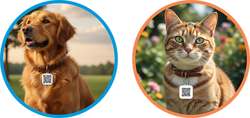

🐾 Cadastrar um PET Encontrado
Você encontrou um animalzinho perdido? Cadastre-o aqui com fotos, localização e informações de contato. Sua ajuda é fundamental para que ele possa voltar para casa em segurança.
Cadastrar Agora🔍 Procurar um PET Perdido
Seu companheiro se perdeu? Consulte nossa lista de pets encontrados. Use os filtros por estado e cidade para refinar sua busca e, com sorte, encontrar seu amigo de quatro patas.
Consultar ListaComo proteger seu PET?
Vá a uma “Empresa Amiga dos Animais” em sua cidade e solicite um QR-Code identificador para colocar na coleira de seu amigo.
Quem AMA protege!